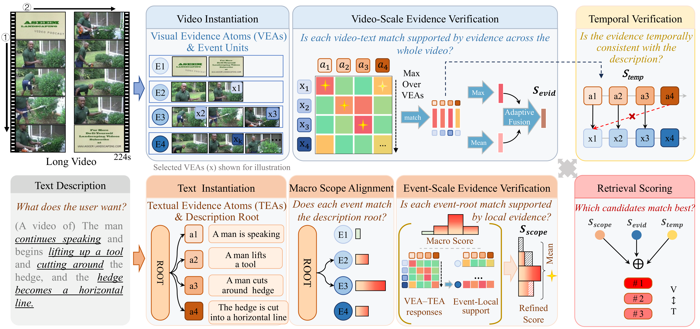
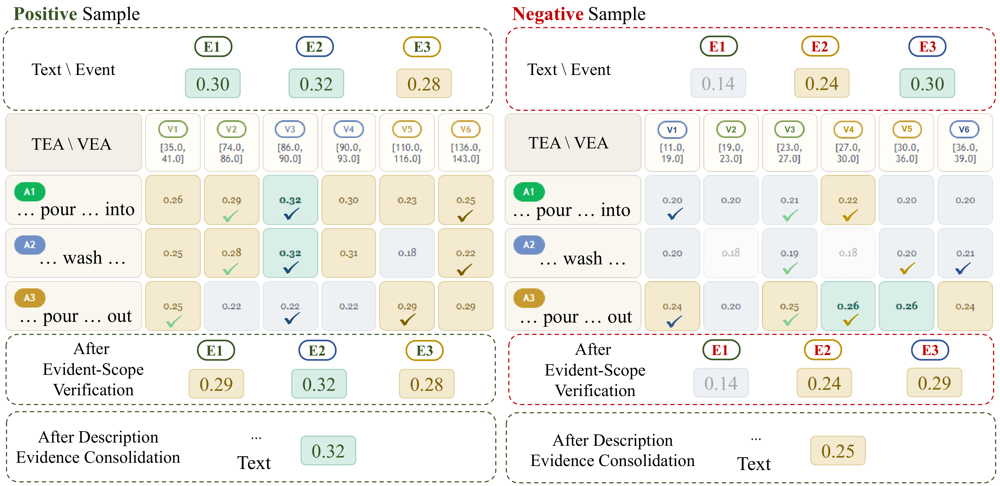

Structured formulation
MoMo addresses scope-evidence mismatch by distinguishing a description's semantic scope from the local evidence that supports it.
Multi-event video-text retrieval supports bidirectional search between videos containing multiple events and textual descriptions. These descriptions vary in semantic scope and granularity, ranging from overall narratives to individual events and fine-grained actions or objects. Flat matching does not explicitly distinguish semantic scopes from their supporting local evidence, leaving relevant details obscured or isolated cues overemphasized. To address this scope-evidence mismatch, we propose MoMo, a training-free framework that reformulates retrieval as structured alignment between semantic scopes and local evidence. MoMo retains the full description and extracts textual evidence atoms (TEAs), while grouping visual evidence atoms (VEAs) into video event units. MoMo uses micro-level TEA-VEA evidence to assess macro-level compatibility between the full description and event units. Evidence within each event refines scope compatibility according to local support, while evidence across the video is adaptively consolidated to assess coverage of the description's cues. A soft temporal term further penalizes inconsistencies between the temporal order of the matched evidence and the order specified in the description. These signals jointly determine a structured retrieval score. Experiments on Charades-Event and ActivityNet-Event show that MoMo outperforms a flat baseline built on the same frozen encoder in both retrieval directions and outperforms the compared supervised methods.
Select a query video to inspect its temporal decomposition and the retrieved text structures.
Select a text query to inspect its action decomposition and the retrieved video structures.
MoMo refines full-description/event compatibility with event-local evidence; the refined event scores are averaged across events. In parallel, adaptive Max/Mean consolidation measures description-wide evidence support, while a soft temporal term checks the order of matched evidence.


The tables below reproduce the paper results for Text2Video and Video2Text retrieval.
MoMo addresses scope-evidence mismatch by distinguishing a description's semantic scope from the local evidence that supports it.
Textual and visual evidence atoms support event-scope verification, description-wide evidence consolidation, and soft temporal checking without task-specific training.
On Charades-Event and ActivityNet-Event, MoMo improves both retrieval directions over a flat baseline using the same frozen encoder and outperforms the compared supervised methods.